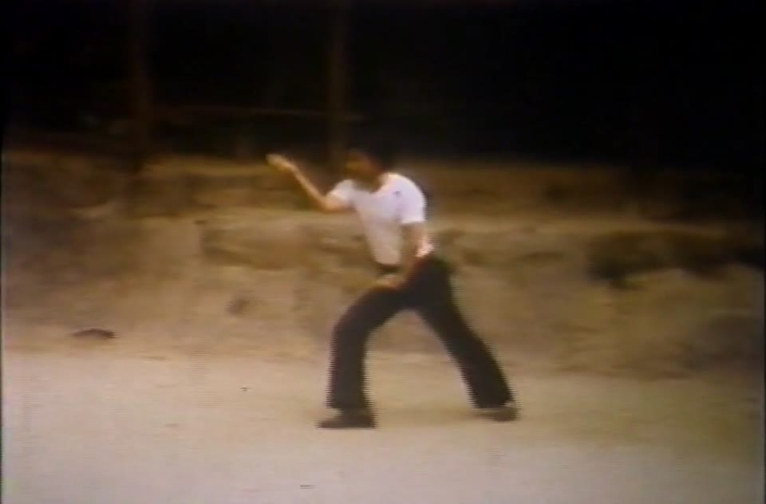

Blog · December 2015
The Devastating Style of Hsing-I · Part 4
Photo
Blog · December 2015
Adapted for the web from Sifu James W. McNeil's newsletter, lightly edited. Sifu McNeil is the Gate Keeper of the Little Nine Heaven Wu Tao System and the teacher of Sifu Ajay Kumra, who teaches privately in Santee, California.
As stated earlier, Hsing-I consists of the five elements: metal, water, wood, fire and earth. Within the system of Hsing-I are specific forms that correspond to each of the elements. Each element has a style and quality of movement that distinguishes it from the others. The action of chi is unique to each of the five elements and describes the quality of movement that must be present in the execution of its corresponding Hsing-I form for the potential effect to be realized. The student must master the application of these distinct qualities before the true Hsing-I power can be felt. The five elements are characterized relative to Hsing-I as follows:
Metal. This element has the attribute of splitting: a strike that travels from up to down and back, with the action of chi like the rising and falling of an ax. In Hsing-I fighting, the hands must be swift, direct, powerful and unstoppable, like the falling of an ax cutting through whatever lies in its path.
Water. Water has the action of drilling. The quality of chi is like a column of water emitted with great force. Water is essential for life, yet it also contains death. Water can be soft and free flowing; we use it to drink, to bathe and to have fun with, but in the form of a raging river or violent storm it will destroy anything in its path. The action of water is best represented by the riptide, in which powerful ocean currents flow against yet feed each other. In Hsing-I fighting, you always strive to receive and use the opponent's force against him, and the circle is completed like a whirlpool as his energy combines with yours in a synergy forming his destruction.
Wood. Wood has the style of crushing. Its action of chi is like an arrow released from a bow. As it thrusts upward in growth or as it falls crushing to the earth, a tree will not easily yield to anything in its path; its indomitable force pushes aside everything that gets in the way. In Hsing-I fighting, an arm is like the limb of a tree, solid and strong yet flexible. The fist must shoot out like an arrow in flight, and when it connects it pierces and penetrates deep into the enemy.
Fire. This element has the style of pounding. The action of the chi is like the firing of a cannon or the rushing sound of combustion in a back draft. Fire is light as a feather and gives us warmth and happiness. Fire is passion. But let it run wild and it can engulf everything in its path.
Wind. The companion of fire; fire both produces wind and is fed by wind. It can be soothing to the body as it blows softly over the skin. Wind can also blow with unstoppable power and strength, as in a tornado, with such devastating force that it can pick up an entire building and drop it miles away. In Hsing-I fighting, one must be objective and emotionless and always fight, even in practice, as though you are facing your worst enemy. Each hit must arrive at the target with the force of a cannonball. This requires a clear mind, focused precision and careful aim.
Earth. This is the mother of all elements. It has the style of crossing. Its action of chi is rolling and round like a marble. We safely spin on the Earth's axis as the Earth continues its orbit around the sun, but when the ground begins to shake, nothing is safe. In Hsing-I fighting the full power of the Earth can be harnessed. This is accomplished by obtaining perfect alignment and being as centered, solid and stable as a mountain. At the same time you also should be mobile and light on your feet, able to turn with quick and effective ease.
In the body, the internal organs are divided into two groups: the yin or solid organs, and the yang or hollow organs. Each of the organs is identified with one of the elements. The yin organs are the heart, lungs, kidneys and liver. The yang organs are the small intestine, stomach, large intestine, bladder and gallbladder.
To truly learn how to capture the devastating power of Hsing-I you must overcome some of the common mistakes that are inevitable in learning something new. This is only natural, and that is why we all have teachers, so they can correct what we cannot see for ourselves.
Every movement and position has a meaning, and it has been preserved through time for a special purpose; whether or not the student can comprehend this depends on the quality of his instruction and length of study. Forms work the chi through specific patterns in the body, and herein lies the magic. To even think to modify an art which has been in existence for hundreds of years takes someone with great skills, and in most cases he is making the erroneous assumption that by modifying a position or movement he is improving it. While a skilled practitioner can make modifications which benefit him personally, he is in no position to improve upon the wisdom of centuries of practice with respect to the teaching of others. Many times trying to do so means the magic is lost. Therefore, it is unwise for modern teachers to revise the ancient teaching indiscriminately or for mere personal gain.
Most of the mistakes made by beginning practitioners are related to balance. If you can keep your balance when manipulating your opponent, you can emerge victorious. Stay rooted, keep your back straight and always be centered, solid and stable, and you can defeat anyone.
In the practice of the twelve animal forms of Hsing-I it is important to note that the spirit or energetic (hsing) characteristics of the animal are more important than the form itself physically looking like an animal. This is common in other animal-related martial arts styles as well. Different lineages have different movements relating to each animal, and this is not to say that any one is better than another. What is important is that the spirit reflected in the movements is appropriate to the animal being emulated, and in this way the connection to the animal can be clearly understood. It is this link to the physical and spiritual characteristics of the animal that connects all the lineages of Hsing-I to make them one family, regardless of the variations in form.
Some lineages also give the forms different names, or the name will portray a different animal. For example, "Tow" is seen by some as a mythical animal; some say it is an alligator, lizard, turtle or tortoise. But again, it is the energetic movements of such animals and how they interact with nature that should be analyzed to see their similarities to one another. The simple truth is that "Tow" could reflect any one of the animals in the example, and it is how the form has been developed by the lineage, and the teachers within that lineage, which has shaped its physical movements. It is best not to argue about such discrepancies in both the classical and current literature, as all have valid points; just look at each form's energy, learn to use it and your Hsing-I will progress. The twelve animals presented here are from the Shansi lineage passed down from my teachers.
Understanding how each animal applies itself in attack and defense is the key to becoming skilled in the use of these forms for self-defense. Each animal technique also has health benefits within the body, as the chi is moved in a specific way with each form; if practiced correctly, the smooth flow of chi developed from each animal form will have a profound benefit to the body and the organs that correspond with that form. If practiced incorrectly, of course, the chi flow may be impeded, and this can lead to ill health developing within the body. Therefore, competent instruction is required, and attention to detail is necessary, when practicing any Hsing-I form in order to obtain the health benefits.
Here I will discuss only one of the animals, describing its spirit or energetic qualities and what it contributes to the body in terms of health and fighting. There is no particular order to learning the twelve animal forms, and it varies from teacher to teacher according to their preference. The forms themselves are not shown here.
The twelve animals in our system are Dragon, Tiger, Monkey, Horse, Tow, Cock, Phoenix, Sparrow/Hawk, Swallow, Snake, Eagle/Bear and Fighting Chicken.
The Horse, or Ma as it is known in Chinese, is a fast and powerful animal full of life and energy; it has great stamina and a strong heart. While engaged in battle, a horse will rise up on its hind legs and strike repeatedly with its front hooves, mimicking the way it gallops and using this natural action to defend itself. In the application of this form, the movement of the upper and lower parts of the body must be balanced properly to show the strong and powerful characteristics of the Horse form.
When the horse stands on its rear legs it raises its height to dominate in the attack. It uses great speed, striking out forward or backward, up or down, depending on its situation. When striking forward its center remains over the back legs; striking backward, the balance shifts to the front legs. This requires an excellent feel for balance and stability to execute its attacks with power and efficiency. If a horse sees a gap in a fence or wall it will instinctively bolt straight through it. With a mindset using this characteristic, when applying the strategy of the Horse form in a fighting situation the practitioner should be constantly on the lookout for a gap in the opponent's defense. If a gap is opened, aim to penetrate straight through it in attack, like the horse bolting for freedom.
When practicing the Horse form in Hsing-I, the weight must remain heavily over the back foot, using this loading of the power to drive straight forward from the ground, channeling this energy up through the body and out through the arms into the opponent. It is important to stay balanced and solid throughout both the first and second postures of the form.
The Horse forms pertain to the element Fire and have similar twisting and turning actions of the forearms throughout, as practiced in the Fire form. This torque through the arms gives the muscles and tendons increased strength in application. The intent of the chi in the Horse form is leaping, driving forward and trampling; speed in maneuvering and a keen sense of anticipation are keys to its successful application. These are all energies that can be seen in the Horse form and in the strategy used to apply it in self-defense. The character of the horse is that of a loyal animal, honorable and pious in its actions. This represents the consciousness within the body which connects with the emotions. This connection with the emotional mind means it aligns with the heart organ, which governs the emotions. When practiced correctly with smooth and harmonious movements, the Horse form will strengthen the chi of the heart. This in turn will keep the emotions calm, reducing the anger within which can easily arise under stressful situations such as fighting. By keeping the emotions calm, the breathing pattern will also remain calm, and this in turn will help keep the brain supplied with clean fresh chi and oxygen, allowing the practitioner to think clearly and act honorably without rash anger.
When executed correctly, the Horse form will appear assured and confident and be successful in its attack. If practiced erratically, the breathing pattern will become erratic and the mind confused. This will lead to being unsettled and frustrated in the technique, and the practitioner will act in anger and be easily defeated.
Read more about the art on the Hsing-I Chuan page, or about Master James McNeil. This is the final part of the series, which begins with Part 1: Origins and the Eight Fundamentals.